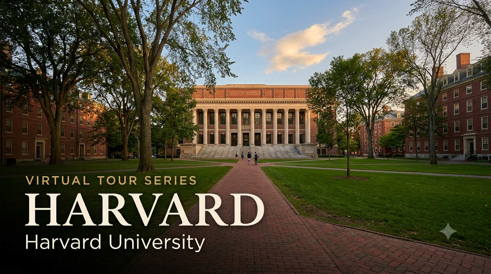

University Spotlight: Harvard — Virtual Tour Guide

I'm delighted to share the fifth edition of the University Virtual Tour Series — a curated resource to help your child explore some of the world's leading universities from the comfort of home. Harvard is the oldest university in the United States and arguably the most recognisable academic institution in the world. Students from both the CBSE and Cambridge programmes will find this resource relevant — Harvard accepts both qualifications.
I strongly recommend that parents of Grade 9 and above students make the time to visit at least one university — Harvard, a local university in India, or any institution of your choice. A physical visit gives your child something no virtual tour can replicate: they will see the infrastructure and facilities with their own eyes, observe how professors engage with students in live classrooms, and most importantly, spend time talking to existing students about their day-to-day experience. These conversations almost always leave a lasting impression and help students make more grounded, confident decisions about their future. If you'd like guidance planning a visit, feel free to get in touch.
Harvard Admission Requirements — CBSE and Cambridge A Level
The table below summarises what Harvard officially requires for students applying through each pathway. Harvard's admissions process is among the most holistic in the world — grades are necessary but far from sufficient. Reach out for personalised application strategy and essay guidance.
| Requirement | CBSE Grade 12 | Cambridge A Level |
|---|---|---|
| Qualification | Indian Standard 12 — CBSE Board; strong overall profile required | Cambridge International A Level; 3–4 A Level subjects |
| Typical Academic Profile | 90–95%+ aggregate; near-perfect marks in relevant subjects; top of class | A*A*A or A*AA; typically top 1% of cohort in relevant subjects |
| SAT / ACT | Test-Optional (reinstated from Class of 2029) — SAT 1500+ or ACT 34+ recommended; middle 50%: SAT 1580–1600, ACT 36 | Same requirement — test-optional but submitting a strong score strengthens the application |
| SAT Subject Tests / AP | Not required; optional; AP scores in relevant subjects demonstrate academic depth | Not required; optional — A Level grades serve the same purpose |
| Application Portal | Common Application or Coalition Application (Harvard accepts both) | Same |
| Restrictive Early Action (REA) | Deadline: November 1 | Decision: mid-December | Non-binding — REA means no other private US university Early applications allowed | Same |
| Regular Decision (RD) | Deadline: January 1 | Decision: late March | Same |
| Essays | Common App essay (650 words) + Harvard-specific supplemental essays (multiple short responses) | Same essay requirements |
| Teacher Recommendations | 2 teacher recommendations + 1 school counsellor recommendation; all required | Same |
| Interview | Alumni interview — conducted by Harvard College alumni volunteers worldwide; alumni networks in major Indian cities; typically conversational (45–60 minutes) | Same — interview offered to most applicants globally |
| Financial Aid | Need-blind for all applicants including international; 100% need-based; apply via CSS Profile | Same — all admitted students receive 100% of demonstrated financial need |
Harvard's published admissions criteria identify four broad dimensions assessed in every application: Academic Excellence (but well above average is insufficient — they seek intellectual vitality and curiosity beyond the classroom); Extracurricular Distinction (not participation in many activities — genuine achievement or leadership in a few); Personal Qualities (character, resilience, sense of purpose — revealed through essays, recommendations, and interview); and Potential Contribution to Harvard and the World (what difference will this student make during their time at Harvard and after). Harvard is explicit that grades and test scores, by themselves, do not guarantee or even strongly predict admission.
Voices from Harvard — Indian Students and Alumni
"Harvard gave me the opportunity to be in a room with the most driven, curious, and creative people from every corner of the world. That environment is itself a form of education that no curriculum can replicate."
— Sundar Pichai, India, Harvard Business School (MBA) | CEO, Google & Alphabet
"My professors at Harvard pushed me to question assumptions — including the assumptions I didn't know I had. That habit of mind has shaped everything I've done since."
— Indira Nooyi, India, Yale School of Management (MBA) | Harvard Advanced Leadership Initiative | Former CEO, PepsiCo
Why Should Your Child Consider Harvard?
1. The Most Recognised University Name in the World
Harvard University, founded in 1636, is the oldest university in the United States and arguably the single most recognised academic institution name globally. Ranked #5 in the world by QS 2027, Harvard holds the most endowment of any university on earth (~USD 53 billion as of June 2025), which funds financial aid, research, and a breadth of academic programming available nowhere else. Harvard alumni include 8 US Presidents, 162 Nobel Laureates, and an extraordinarily influential alumni network across every field — including Indian business, law, public policy, and technology.
2. The Harvard Liberal Arts Model — Education Across Disciplines
Harvard offers the Harvard College General Education Programme — every student must study across Science and Technology, Ethics, Aesthetics, Culture and Belief, and Societies of the World. This means a Computer Science student at Harvard will engage seriously with ethics, history, and social science; a Biology student will confront the philosophy of science. This breadth is a deliberate design choice — Harvard believes that the leaders its students will become need more than technical depth. For Indian students accustomed to narrow specialisation from Grade 9 onward, Harvard's model is a genuine intellectual liberation.
3. Location — Cambridge, Massachusetts: World Capital of Innovation and Ideas
Harvard sits in Cambridge, Massachusetts — steps from MIT, across the Charles River from Boston, and at the centre of one of the world's greatest concentrations of universities, hospitals, and technology companies. Boston and Cambridge together are home to over 50 universities and colleges, creating an extraordinary intellectual community. Harvard students can cross-register at MIT, attend lectures at Tufts, and intern at companies from biotech to finance to government — all within one of the safest, most vibrant academic cities in the world.
4. Need-Blind, Full-Need Financial Aid — One of Only 5 Universities Worldwide
Harvard is one of only five universities in the world that is simultaneously need-blind and full-need for ALL applicants — including international students. Families with annual income below USD 85,000 pay nothing. Those with income USD 85,000–150,000 typically pay 0–10% of income. The full annual cost of attendance is approximately USD 92,000, but Harvard's median financial aid package covers 60% of demonstrated need — and families in lower-income bands often attend for free. 55% of Harvard students currently receive need-based scholarship aid.
What Parents Should Know
- Harvard's acceptance rate is approximately 3.4% — the lowest of any university profiled in this series; a perfect academic profile is a baseline, not a guarantee — the holistic review is genuinely holistic
- Test-optional policy was reinstated by Harvard from Class of 2029 — submitting a strong SAT (1550+) or ACT (35+) score remains strongly recommended for international applicants
- Restrictive Early Action (REA) deadline is November 1 — students applying REA cannot apply early to any other private US university; they can apply to public universities early
- Financial aid is applied for separately through the CSS Profile — apply as early as possible after the university opens financial aid applications (typically October 1)
- F-1 student visa required — apply at least 5–6 months before your programme start date; since June 2025, all social media profiles must be public for visa interview
- Harvard has a large and active Indian Students Association (HISA) and South Asian communities spanning arts, cultural celebration, and professional networking — your child will not be the first from India
To discuss Harvard application strategy, Common App essay planning, extracurricular profile building, SAT/ACT preparation, financial aid, and interview preparation for your child, feel free to write to me at pcmadankumar@gmail.com or get in touch via the contact page. I'm happy to set up a one-on-one session at a time convenient for you.
I curate University Virtual Tour resources as part of my commitment to helping students and parents make informed post-secondary decisions. Future editions will continue to spotlight leading universities across major study destinations worldwide, including the UK, USA, Australia, Canada, India, and Singapore.
Best wishes,
Madan Kumar PC
References
- QS World University Rankings 2027 — Harvard #5 globally (released 18 June 2026). topuniversities.com
- Harvard College Admissions — What We Look For. college.harvard.edu
- Harvard College Admissions — Applying. college.harvard.edu
- Harvard College Admissions — First-Year International Students. college.harvard.edu
- Harvard Financial Aid — How Harvard Works. college.harvard.edu
- Harvard Financial Aid — Apply for Aid. college.harvard.edu
- Harvard General Education Programme. gened.fas.harvard.edu
- Harvard University Campus Tour — YouTube. youtube.com